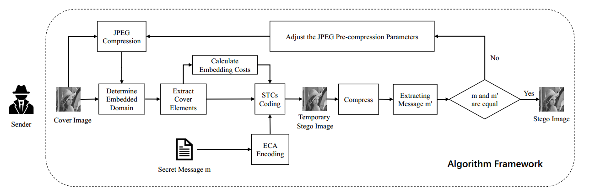

<!--下面是向下滚动代码-->

<div id=butong_net_bottom style=overflow:hidden;height:720px;width:1260px;>
  <div id=butong_net_bottom1>
    
    
    
    
    
  </div>
  <div id=butong_net_bottom2></div>
</div>
<script>
  var speed=30
  butong_net_bottom2.innerHTML=butong_net_bottom1.innerHTML
  butong_net_bottom.scrollTop=butong_net_bottom.scrollHeight
  function Marquee2(){
    if(butong_net_bottom1.offsetTop-butong_net_bottom.scrollTop>=0)
      butong_net_bottom.scrollTop+=butong_net_bottom2.offsetHeight
    else{
      butong_net_bottom.scrollTop--
    }
  }
  var MyMar2=setInterval(Marquee2,speed)
  butong_net_bottom.οnmοuseοver=function() {clearInterval(MyMar2)}
  butong_net_bottom.οnmοuseοut=function() {MyMar2=setInterval(Marquee2,speed)}
</script>

<!--向下滚动代码结束-->

